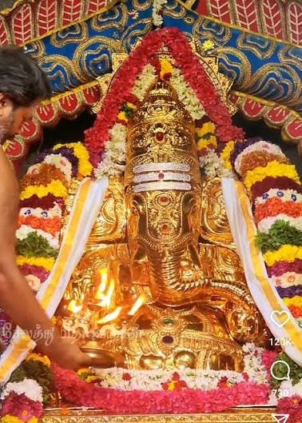

Temples
Explore the prominent spiritual centers and ancient Hindu temples in and around Neyveli.

Sri Nataraja Temple
📍 Block 29, Neyveli Township
A prominent South Indian temple architecturally inspired by Chidambaram, acting as a major spiritual center.
View Details
Villudayanpattu Murugan Temple
📍 Veludayanpattu, Neyveli
Ancient and revered Murugan temple located near Neyveli, famous for its unique hunter avatar deity.
View DetailsSri Bhuvaraha Swamy Temple
📍 Srimushnam, Cuddalore District
A legendary, ancient Vaishnavite temple located near Neyveli, famous for its Varaha avatar deity.
View Details
Sri Kolanjiappar Temple
📍 Manavalanallur, Vriddhachalam
A unique Murugan temple where prayers are written and tied to the altar to seek swift divine intervention.
View Details
Sri Golden Vinayagar Temple
📍 Block 24, Neyveli Township
A beautiful, serene temple in Block 24 dedicated to Lord Ganesha, featuring modern architecture.
View Details
Vadavaur Mariamman Temple
📍 Vadavaur Village, Cuddalore-Neyveli Road
A vibrant village temple dedicated to Goddess Mariamman, famous for its annual fire-walking festival.
View Details